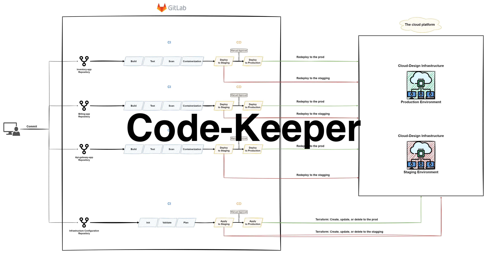
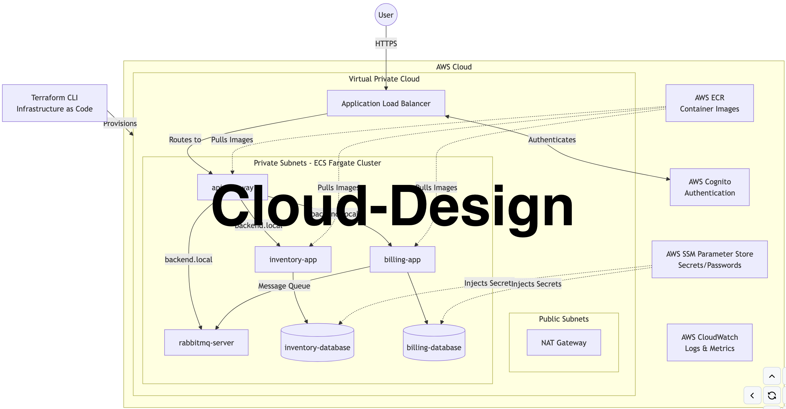
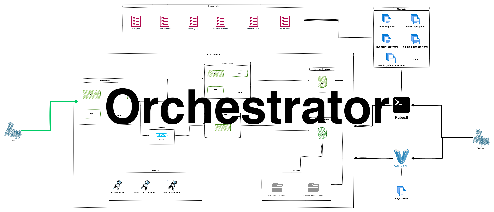
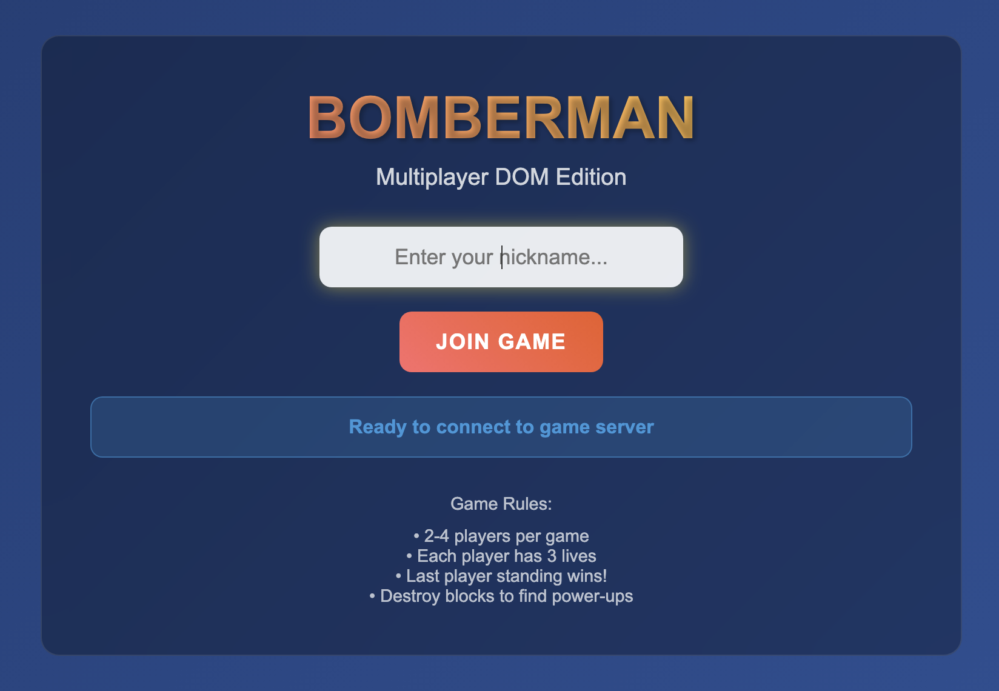
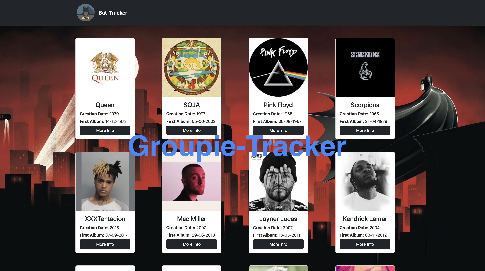

real-time-forum
Forum with posts feed and real time chat.
- Role: backend and frontend of the website, database.
- Tech: JavaScript • Golang • HTML/CSS
filler
An algorithm-based two-player strategy game where players take turns placing random shapes on a grid to claim the most space while blocking their opponent.
- Role: input parsing, design and implementention of the core logic.
- Tech: Rust • Docker
smart-road
Autonomous vehicles smart intersection management.
- Role: intersection logic strategy.
- Tech: Rust
code-keeper
- Role: Designed and developed the application, worked on the databases and integrations, built the CI/CD pipeline, and deployed the system to AWS. The outcome was a functioning cloud-deployed application with separate data domains and automated deployment.
- Tech: AWS CLI • Terraform • Gitlab • VirtualBox

cloud-design
- Role: Deployment of a microservices application to AWS using Terraform and containerized services running on ECS Fargate. The system is exposed through a secure gateway with authentication, and the services communicate internally through cloud networking. Setting up centralized logging, secret management, and scaling so the deployment is stable and observable.
- Tech: AWS CLI • Terraform • Docker

orchestrator
- Role: Containerization and deployment of the microservices to a Kubernetes cluster using standard manifests for deployments, services, and networking. The system was exposed through an ingress/load balancer for external access, while internal service-to-service communication was handled through Kubernetes service discovery. Validation of the deployment by scaling services, monitoring health/logs, and confirmation the APIs work end-to-end.
- Tech: Vagrant • VirtualBox • kubectl CLI tool • Docker

make-your-game
Single-player video game version of bomberman.
- Role: sound effects.
- Tech: JavaScript • Adobe Photoshop • Audacity
bomberman-dom
Multiplayer video game version of bomberman with a lobby chat.
- Role: Design and implementation of the game logic.
- Tech: Go • JavaScript • HTML/CSS

groupie-tracker
- Role: Developed a Go web application that fetches and visualizes API data with server-side event handling.
- Tech: Go • HTML/CSS
